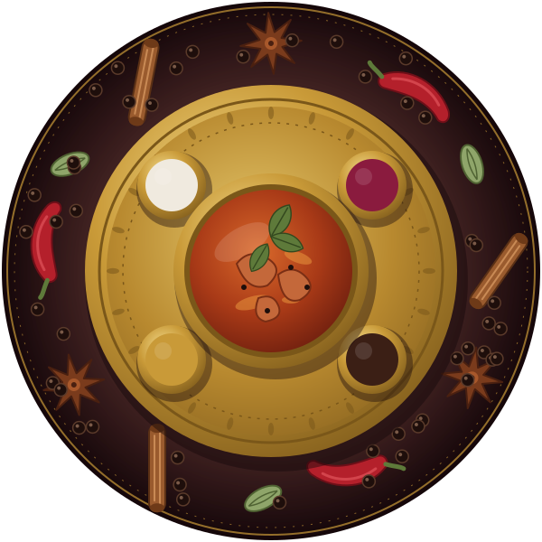

Bold Spices. Traditional Flavours.
Experience the rich flavours of Chettinad cuisine, prepared with aromatic spices and warm hospitality.

About Us
Chettinad Spice is a family-friendly restaurant dedicated to the authentic cuisine of the Chettinad region of Tamil Nadu. Our dishes are made with freshly ground spices and time-honoured recipes, served with warmth and care.
Voices from our Customers
The Chettinad Chicken Curry tastes just like the one my grandmother used to make. Bold, smoky and perfectly spiced.
The mutton curry was so tender it almost melted, and the gravy had real depth. Easily the best I have had outside home.
Pepper Chicken is my weekly treat. Sharp black pepper, fresh curry leaves and not a drop of oil too much.
As a vegetarian I felt completely looked after. The Vegetable Kurma was creamy, gentle and deeply comforting.
Kuzhi Paniyaram with coconut chutney, crisp outside and soft inside. The children finished the whole plate.
The Chicken Biryani is fragrant and perfectly cooked, and the staff made us feel like family.
We celebrated a family birthday here. Warm hospitality, honest flavours and food that tasted truly traditional.